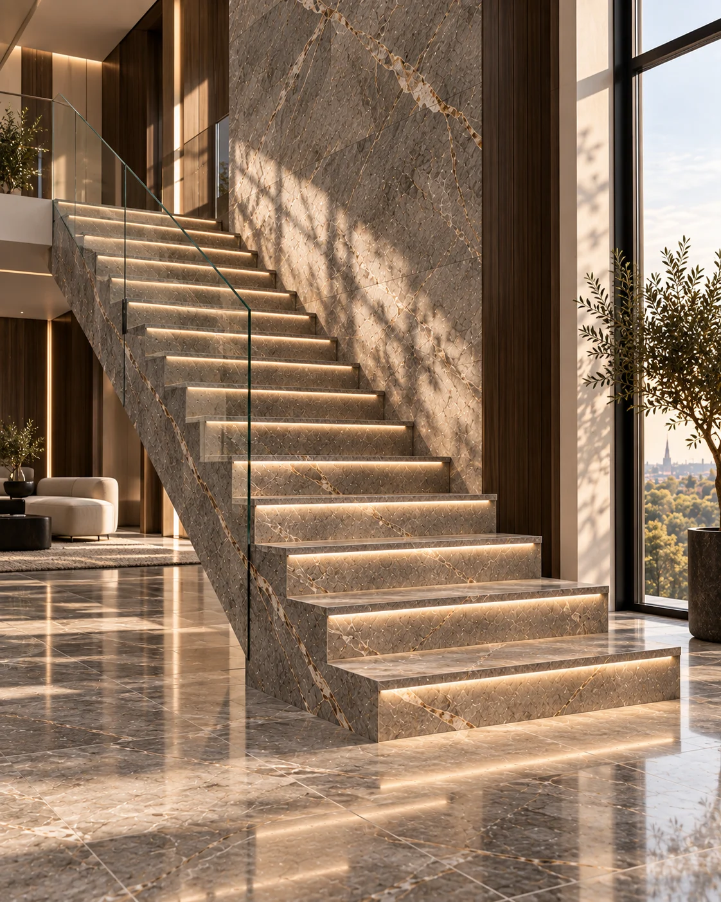
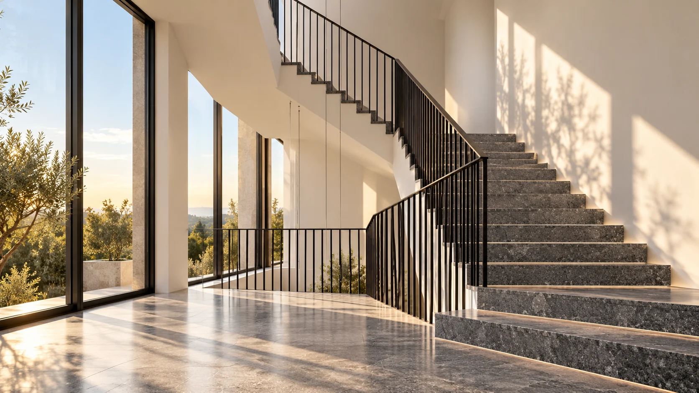
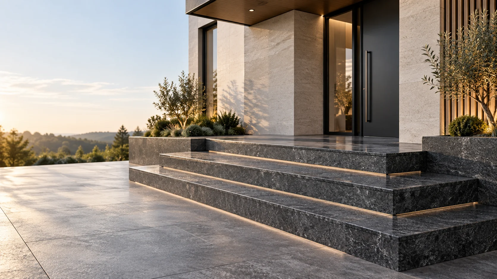
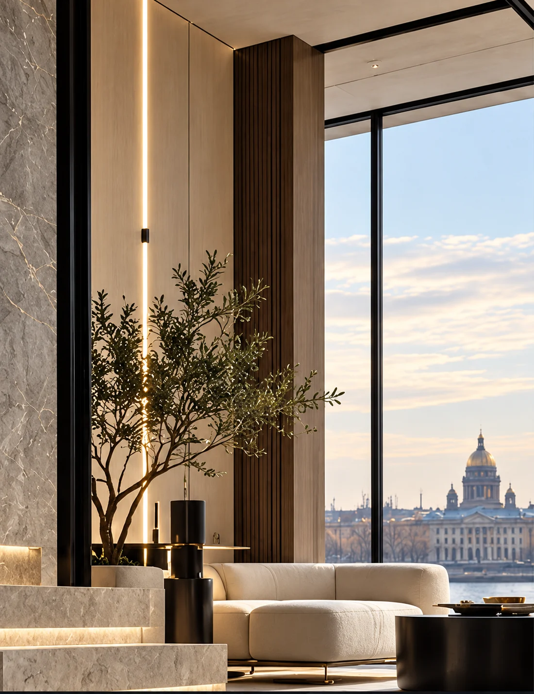

Частные проекты
Берём на себя весь путь от идеи и выбора камня до установленного изделия. Клиенту не требуется самостоятельно координировать поставщика, производство, замерщика и монтажников.
Как проходит частный проект ↗

Архитектура камня / ROCCA
Интерьерные и архитектурные решения из натурального камня. От выбора материала и точного замера до производства, монтажа и сдачи объекта.
Санкт-Петербург · Ленинградская область · проекты по России
 Материал. Форма. Пространство.
Материал. Форма. Пространство.ROCCA объединяет подбор материала, инженерный замер, проектирование, производство на проверенных мощностях, монтаж и технический контроль на объекте.
Под архитектуру и условия эксплуатации.
Фактическая геометрия и рабочая документация.
Производство, логистика, монтаж и контроль.
Берём на себя весь путь от идеи и выбора камня до установленного изделия. Клиенту не требуется самостоятельно координировать поставщика, производство, замерщика и монтажников.
Как проходит частный проект ↗Подключаемся к проекту как технический партнёр: подбор материалов, фактические замеры, рабочая документация, производство и реализация разработанных решений.
Для профессионалов ↗
От выразительной лестницы
до индивидуальной детали.
Визуальные концепции направлений.
Реальные объекты — скоро.



Индивидуальные решения
Камины ↗Кухни ↗Ванные ↗Индивидуальные изделия ↗Портфолио готовится к публикации. Обсудить похожую задачу и запросить примеры можно по почте hello@roccastone.ru.
Мы не ограничиваем проект ассортиментом одного склада.
Материал подбирается у российских и зарубежных поставщиков исходя из архитектуры, технических требований и бюджета проекта.

Материал раскрывается в пространстве: в рисунке, фактуре и точности сопряжений.

Сложные каменные изделия требуют точной связи между проектной геометрией и фактическим объектом.
Поэтому критичные участки измеряются и переводятся в цифровую геометрию до начала производства.
Профессиональное измерительное оборудование Leica
Для каждого проекта подбираются производственные мощности под материал, геометрию и требуемую технологию обработки.
Возможности нашего производства:
Подключаемся к проекту на этапе разработки или реализации и берём на себя техническую часть работ с камнем.
Сохраняем архитектурный замысел автора проекта и решаем задачу его технической реализации.
Отправить проект на оценку ↗Скоро в журнале
Скоро в журнале
Скоро в журнале
Философия ROCCA

Пришлите проект, эскиз или фотографии объекта. Начнём с вашей задачи.
hello@roccastone.ru ↗Санкт-Петербург / Ленинградская область / проекты по России
Проектные и технические вопросы — Евгений
Материалы и комплектация — Ольга